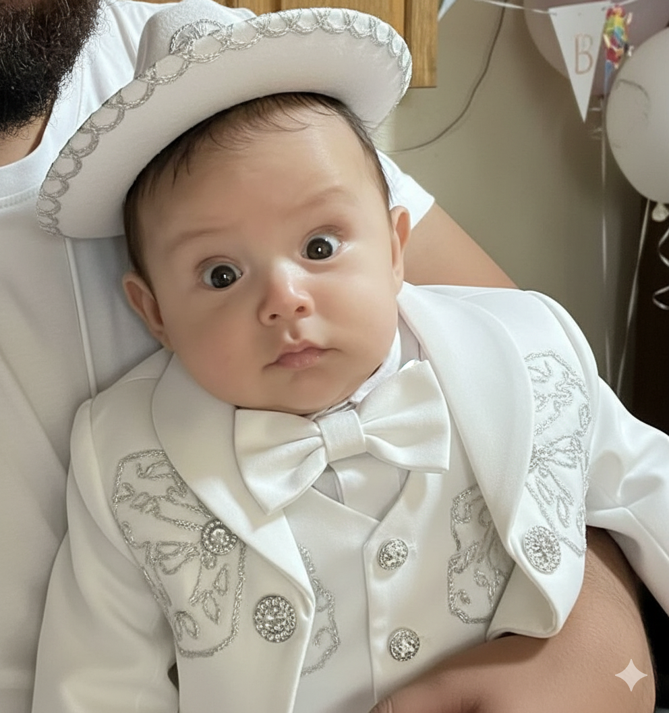

Recuerdo de mi
Bautizo

Thiago Gutiérrez García
"Bajo la luz de Dios, tu camino comienza, guiado por el amor y la fe de quienes te rodean."
Diciembre 2025
Tlachichila, Nochistlán de Mejía, Zacatecas
Mamá: María de la Luz García Saldivar
Padrinos: Ángel García Durán y Rosa Elena García Saldivar
üì∑ Ver galer√≠a completa
Gracias por ser parte de este d√≠a tan especial üíô
Atentamente Familia Garcia